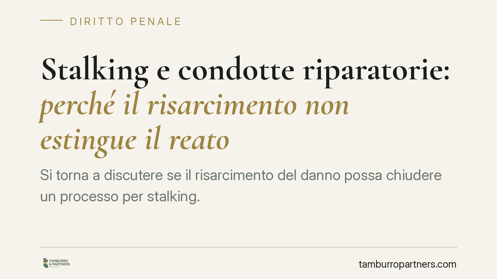

Stalking e condotte riparatorie: perché il risarcimento non estingue il reato
Si torna a discutere se il risarcimento del danno possa chiudere un processo per stalking. La risposta, sul piano normativo, è negativa: la causa di estinzione per condotte riparatorie prevista dall'art. 162-ter c.p. non trova applicazione agli atti persecutori. Le ragioni stanno nella disciplina della procedibilità del reato, spesso irrevocabile o d'ufficio.

Il caso
La questione ricorrente è la seguente: chi è imputato per atti persecutori (stalking) può ottenere la chiusura del processo risarcendo la persona offesa? La suggestione nasce dall'art. 162-ter del codice penale, che consente in alcuni casi di estinguere il reato attraverso le cosiddette condotte riparatorie. Applicato allo stalking, però, questo istituto incontra un limite strutturale che ne esclude l'operatività nella generalità dei casi.
Inquadramento normativo
L'art. 162-ter c.p., introdotto nel 2017, prevede l'estinzione del reato quando l'imputato ripara integralmente il danno mediante restituzioni o risarcimento, oltre all'eliminazione delle conseguenze dannose o pericolose. Il punto decisivo è nel primo comma: l'istituto opera soltanto per i reati procedibili a querela soggetta a remissione. In altri termini, presuppone un reato che la persona offesa possa "perdonare" ritirando la querela.
Qui sta lo snodo tecnico. L'art. 612-bis c.p. (atti persecutori) è, di regola, procedibile a querela, ma con caratteristiche particolari introdotte dalle riforme più recenti. La querela per stalking è irrevocabile quando il fatto è commesso mediante minacce reiterate e gravi nei modi previsti dall'art. 612, secondo comma, c.p. Al di fuori di tale ipotesi la remissione resta possibile, ma può avvenire solo in sede processuale.
A ciò si aggiungono i casi di procedibilità d'ufficio: quando la persona offesa è minore o disabile, quando il fatto è connesso ad altro delitto procedibile d'ufficio, e nelle ipotesi aggravate previste dalla norma.
La conseguenza è lineare. Dove la querela è irrevocabile o si procede d'ufficio, manca il presupposto stesso dell'art. 162-ter c.p., cioè la remissione della querela. L'istituto delle condotte riparatorie, quindi, non può estinguere il reato di stalking nelle situazioni in cui la procedibilità è sottratta alla disponibilità della persona offesa.
Perché conta
La distinzione non è formale. Significa che, nei casi più gravi e più frequenti, il risarcimento del danno – per quanto integrale – non ha effetto estintivo sul processo penale. La logica è di tutela: lo stalking non è un conflitto economico componibile con una somma di denaro, ma una condotta che incide sulla libertà e sulla serenità della persona.
Questo non svuota di rilievo il risarcimento. Il ristoro del danno conserva valore, ma su un piano diverso: può essere valutato come circostanza attenuante e incidere sulla determinazione della pena, non sulla sopravvivenza del processo.
Implicazioni pratiche
Per chi è persona offesa. Il risarcimento ricevuto non comporta automaticamente la fine del procedimento. Se la querela è irrevocabile, il processo prosegue a prescindere dalla volontà di chiudere la vicenda. È bene conoscere il regime di procedibilità del proprio caso prima di assumere iniziative.
Per chi è imputato. Confidare nel risarcimento come via d'uscita processuale è una strategia fragile: nella maggior parte delle ipotesi di stalking non produce estinzione. Il risarcimento può però pesare in sede di commisurazione della pena e nella valutazione complessiva della condotta.
Per chi valuta se sporgere querela. Occorre verificare in anticipo se il caso rientri tra quelli a querela irrevocabile o a procedibilità d'ufficio, perché da questo dipende la possibilità (o meno) di tornare sulla decisione.
Cosa fare in concreto
- Verificare con precisione il regime di procedibilità: querela rimettibile, irrevocabile o procedibilità d'ufficio.
- Documentare puntualmente le condotte persecutorie (messaggi, chiamate, appostamenti) fin dal primo episodio.
- Non considerare il risarcimento come strumento estintivo del processo per stalking: valutarlo per gli effetti che effettivamente produce sulla pena.
- Se si è persona offesa, chiarire prima di ogni accordo economico quali effetti processuali comporti realmente.
- Affrontare la questione della remissione solo con piena consapevolezza dei limiti temporali e formali previsti dalla legge.
---
Contributo informativo a cura di Tamburro & Partners - Avv. Giuseppe Tamburro. Non costituisce parere legale.
Ogni condominio ha una storia a sé.
Se gestisci un'amministrazione e vuoi un confronto su una specifica questione condominiale, scrivi allo studio. Ti rispondiamo entro un giorno lavorativo.